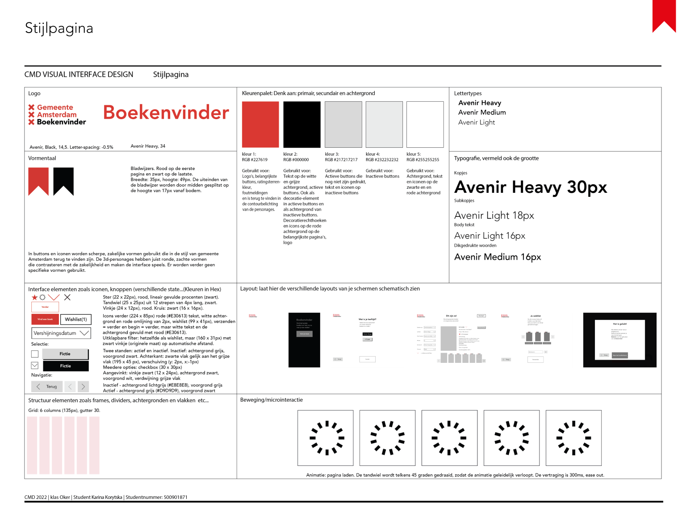

The process
09.2022-02.2023
I'm a passionate Communication and Multimedia Design student from Amsterdam University of Applied Sciences. With expertise in user-friendly design, captivating 3D renders, and interactive 3D, I combine creativity with technical skills. I strive to create innovative and engaging digital experiences that make a lasting impact. Constantly curious and committed to learning, I'm excited to contribute to the dynamic field of communication and multimedia design.
| k.korytska@gmail.com | |
| linkedin.com/in/karina-korytska | |
| Dribbble | dribbble.com/karinakorytska |

09.2022-02.2023

Designed during my first study year at HvA as a concept website, Sci-Finder serves as a comprehensive guide for discovering science fiction content, including books, movies, and games. The website features ratings, detailed information, and streaming options, enabling users to explore and enjoy science fiction content tailored to their preferences. By leveraging intelligent algorithms, Sci-Finder generates personalized recommendation lists, ensuring that users find content that aligns with their tastes. The website's aesthetic is carefully crafted with sci-fi theme colors, creating an immersive experience for the target audience. Our team employed various design principles to ensure clarity, ease of use, and visual appeal, enhancing the user experience. Drawing from the theory of "key messaging," the slogan effectively communicates the value, how, and capabilities of the website, providing a clear message to users. Additionally, self-made 3D mascots add a playful touch, further engaging users as they navigate the website.

10.2022-11.2022
Developed in collaboration with a team, this concept revolves around creating a simple and intuitive application catering to individuals seeking clear and step-by-step recipe guidance, tailored to their preferences. Through extensive research on the target audience, including user involvement in small-scale studies, we crafted a functional prototype using Figma. Following UX/UI principles, I iteratively improved the design based on user feedback. The project emphasized teamwork, fostering an inclusive environment where each team member contributed their ideas and expertise.
01.2023-02.2023
This project aimed to create a personalized web application catering specifically to the needs of Tomoko, a Japanese student exploring Amsterdam's food scene. Taking into consideration Tomoko's preferences and requirements, I developed a customized tool that allows her to easily discover Japanese food spots in the city. Inspired by various applications, I crafted a unique and minimalistic prototype tailored to Tomoko's taste. Additionally, I implemented a simple working prototype using JavaScript to showcase the functionality of the app.
04.2023-06.2023

Designed as an application concept for iPad, Boekenvinder caters to children up to 15 years old, helping them discover interesting books at the library in Amsterdam. The challenge was to create an appealing and user-friendly design specifically tailored to a younger audience. To achieve this, I combined the official style of the municipality of Amsterdam with playful elements, incorporating self-made 3D character mascots that encourage children to interact with the app and explore the world of books. Additionally, I incorporated simple animations to further engage the target audience. Throughout an iterative process, I created and refined multiple versions, culminating in a functional prototype developed in Figma.
This project showcases a stunning 3D render of a glass cow surrounded by an ethereal fog. Created from scratch within one week using Blender, meticulous attention was given to achieve a realistic appearance, utilizing advanced material effects to convey a sense of impressiveness and seriousness. The interplay between the transparent glass and the atmospheric fog creates a captivating visual composition that captures the viewer's attention.

This project showcases a delightful 3D render of a chocolate factory crafted from gingerbread, waffles, cakes, and an array of delectable sweets. The scene comes to life as an animated GIF, featuring a rotating production line that creates mouthwatering doughnuts. A whimsical touch is added with a fog-doughnut emerging from the pipe and disappearing into thin air. This versatile model can be used for games or as a captivating static 3D picture, offering endless possibilities for diverse projects. The meticulous attention to detail and playful design make this gingerbread chocolate factory an enchanting visual treat.

This project features an adorable 3D cat mascot rendered in captivating warm colors. The cat's fur, created using faces and polygons instead of a particle system, achieves a remarkable level of realism while keeping the model relatively lightweight. The meticulously designed and rendered fur adds a touch of authenticity and charm to the cat mascot. With its attractive appearance and attention to detail, this 3D cat mascot is perfect for a variety of applications, including branding, animations, or interactive experiences.

Copyright © 2022-2024 Karina Korytska. All Rights Reserved.